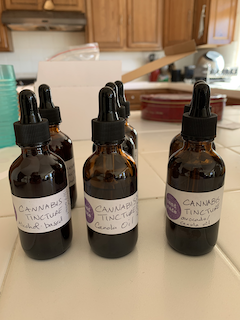

<!doctype html>
<html>
<head>
<meta charset="UTF-8">
	<link href="css/jobaid.css" rel="stylesheet">
<title>Lab 1: Job Aid
</title>
</head>

<body>
</body>
</html>

<div id="header">
       <h1> How to Make Cannabis Tincture </h1>    
       <h2> By  Caitlin Binder </h2>  <br>
    </div>

<h3>Disclaimer: Please check your state and local laws regarding use of marijuana products!</h3>

<div id="step0">
		<div class="stepTitle">
   What is Cannabis Tincture?
		</div>
		<div class="stepContent">

		<div class="stepDescription">
	<p> Cannabis tincture is made from activated (decarboxylated) marijuana flowers that have been extracted into a liquid solvent and filtered. </p> 
	<p> Vegetable oil and high-proof alcohol are the most common solvents for tinctures.  </p>
	<p> The tincture is a solution (mixture) of THC, the psychoactive component of marijuana, in oil or alcohol.  </p>
	<p> Store-bought cannabis tinctures tend to be very expensive when purchased from a marijuana dispensary, considering the relative simplicity of the recipe and availability of materials. </p>   
	<p> The chemistry behind this procedure will be described in future pages!</p>
   		       </div>

		<div class="stepImage">
  
		
		</div>

		</div><!--stepContent-->
<br>
    </div><!--step0-->

<div id="step1">
		<div class="stepTitle">
   Step 1: Prepare the Flower
		</div>
		<div class="stepContent">

		<div class="stepDescription">
			<p> Obtain 7 grams of flower from your local dispensary. 
			<p> Note: The scale is not necessary, as 7 grams is equal to a “quarter ounce” of marijuana buds that can be purchased from a local dispensary. </p>
			<br>
			<p> In small batches, use an electric coffee/spice grinder or a hand-held grinder to break the flower down into smaller pieces.Careful not to overgrind to a powder, as this will make later steps more difficult. </p> 
			<p> Transfer the ground flower to a pie plate in an even layer and cover tightly with aluminum foil. </p>
   		       </div>

		<div class="stepImage">
  
		</div>

		</div><!--stepContent-->

    </div><!--step1-->

<div id="step2">
<div class="stepTitle">
	
   Step 2: Heat to Activate the THC via Decarboxylation
		</div>
		<div class="stepContent">

		<div class="stepDescription">
			<p> Why? The THCA in the flower needs to be converted into THC to unleash marijuana’s psychoactive properties (we’ll save the chemistry explanation for another time). This process, called “decarboxylation” requires mild heat. </p>
			<p> Caution: higher temperatures will burn the flower; double-check your oven temperature! </p> 
			<p> Place the covered pie plate with flower into the pre-heated oven for 30 minutes. A skunky aroma indicates that decarboxylation is taking place. </p> 
			<p>Remove the pie plate from the oven and let cool to room temperature before removing the foil.  </p>
			<p>The initially green flower should now be light brown. The product is decarboxylated (decarb’d) flower (THCA has been converted to THC). </p>
   		       </div>

		<div class="stepImage">
  
		</div>

		</div><!--stepContent-->

    </div><!--step2-->


